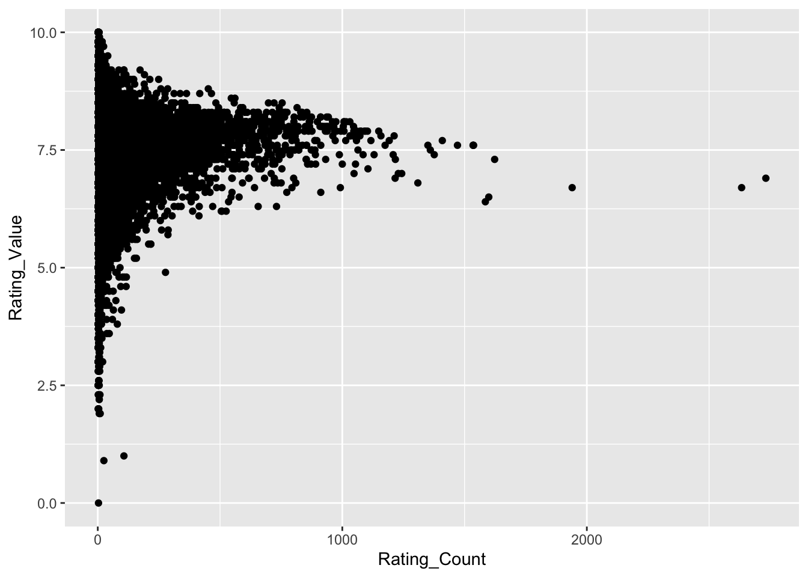
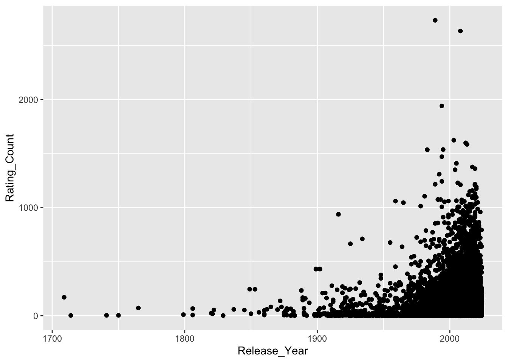
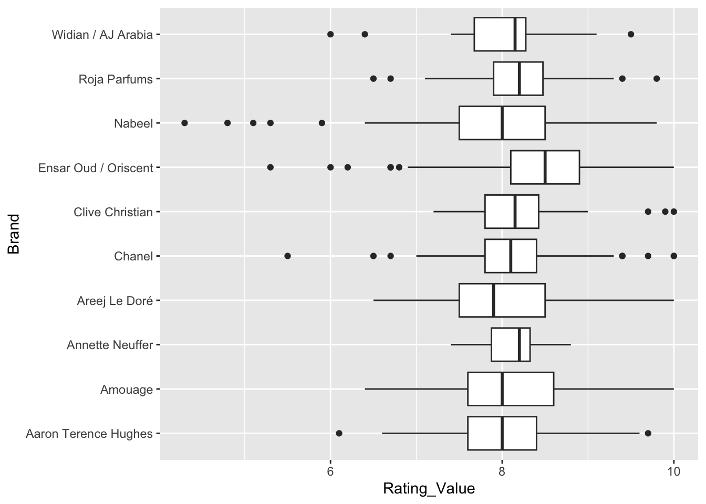
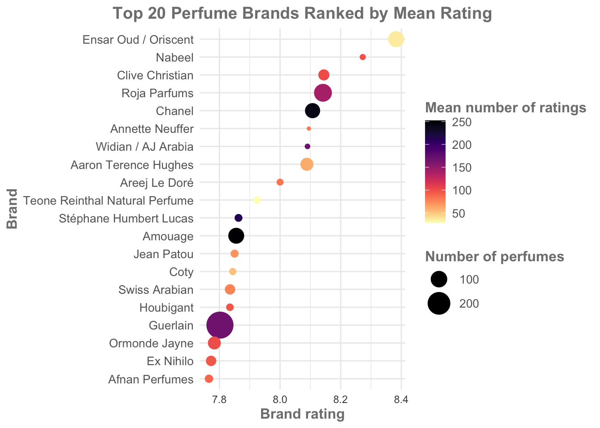

── Attaching core tidyverse packages ──────────────────────── tidyverse 2.0.0 ──
✔ dplyr 1.1.4 ✔ readr 2.1.5
✔ forcats 1.0.0 ✔ stringr 1.5.1
✔ ggplot2 3.5.2 ✔ tibble 3.2.1
✔ lubridate 1.9.4 ✔ tidyr 1.3.1
✔ purrr 1.0.4
── Conflicts ────────────────────────────────────────── tidyverse_conflicts() ──
✖ dplyr::filter() masks stats::filter()
✖ dplyr::lag() masks stats::lag()
ℹ Use the conflicted package (<http://conflicted.r-lib.org/>) to force all conflicts to become errorsStart to Finish Visualizing your Data
If you want to start practicing visualizations, a really great place to start is with tidytuesday. Tidytuesday is a community initiative that publishes a weekly dataset in an easy to access format. Every week, people create a visualization of the data and share it on some form of social media (or just keep it to themselves). In 2024 tidytuesday had the aim of being featured in 10+ training courses. They hit more than 30+!
Check out the tidytuesday github to see all the data.
In this episode we are going to access some of the tidytuesday data and go through the process of visualizing the data. There are hundreds of example datasets available, and some of them are very interesting! Part of the aim of this episode is to explore a dataset that we are not familiar with. This material is based on my first experience participating in tidytuesday, and I had no idea what the data was like or what to expect.
Overview
Together, we are going to go from start to finish and create a visualization. Start to finish means we will need to explore the data, make decisions involving modifications and transformations, and finally, visualize the data in a meaningful way.
Note: Just the other day I saw a post on LinkedIn, someone had done a screencast recording of them going through a tidytuesday visualization (in Python!). The poster warns us: “I have to admit, this screencast is 80% me orienting to this week’s data”. The comments section immediately responds that “80% orienting to the data is real life!”
Aims
To demonstrate the full process of exploratory analysis, data transformation, and visualization.
Generate discussion, via questions and exercises, about the data and the validity of our modifications and decisions.
To generate a figure that is clear, conveys a message, and is visually appealing.
How this will work
I will work through all the code required to create the end product visualization. You can follow along exactly, or you can opt to deviate from my example (e.g., during data transformation step you might choose to keep 25 samples while I keep 20, you might choose to use the median while I use the mean). If you are newer to ggplot2, then I recommend you follow exactly. If you are more confident, then modify the code as you see fit.
You will be provided with a full and complete copy of all this code, to use as a template for your own work.
Getting started
Packages
For this section we are going to need dplyr, readr, and ggplot. We can load them separately, or we can load the whole tidyverse package.
Importing the data
All tidytuesday data is available for easy download and importing. The data is generally very well organised (it has already gone through cleaning and is ‘tidy’).
parfumo_data_clean <- readr::read_csv('https://raw.githubusercontent.com/rfordatascience/tidytuesday/main/data/2024/2024-12-10/parfumo_data_clean.csv')Rows: 59325 Columns: 13
── Column specification ────────────────────────────────────────────────────────
Delimiter: ","
chr (10): Number, Name, Brand, Concentration, Main_Accords, Top_Notes, Middl...
dbl (3): Release_Year, Rating_Value, Rating_Count
ℹ Use `spec()` to retrieve the full column specification for this data.
ℹ Specify the column types or set `show_col_types = FALSE` to quiet this message.Exploratory analysis
The first step in exploratory analysis is to understand our data. This is the equivalent of picking up a wrapped present, feeling the weight, how solid it is, maybe giving it a little bit of a shake, and trying to figure out what’s inside. With our data, we are trying to build a light-weight mental model - what each object is storing, whether the data is numeric, are there missing values, are there biases between groups, is the data normally distributed etc., etc.,.
Useful functions here include dim(), colnames(), head(), summary(), str(), class(), and many others. You will develop a set of favourites and defaults.
parfumo_data_clean |> head()# A tibble: 6 × 13
Number Name Brand Release_Year Concentration Rating_Value Rating_Count
<chr> <chr> <chr> <dbl> <chr> <dbl> <dbl>
1 455 Tabac Écarl… Le R… NA <NA> NA NA
2 0071 Tidal Pool CB I… 2004 <NA> NA NA
3 0154 Pumpkin Pie CB I… 1998 <NA> NA NA
4 0162 Wet Stone CB I… 2006 <NA> NA NA
5 0171 Chocolate B… CB I… NA <NA> NA NA
6 0191 My Birthday… CB I… 1975 <NA> NA NA
# ℹ 6 more variables: Main_Accords <chr>, Top_Notes <chr>, Middle_Notes <chr>,
# Base_Notes <chr>, Perfumers <chr>, URL <chr>parfumo_data_clean |> summary() Number Name Brand Release_Year
Length:59325 Length:59325 Length:59325 Min. :1709
Class :character Class :character Class :character 1st Qu.:2005
Mode :character Mode :character Mode :character Median :2013
Mean :2006
3rd Qu.:2018
Max. :2024
NA's :20316
Concentration Rating_Value Rating_Count Main_Accords
Length:59325 Min. : 0.000 Min. : 2.00 Length:59325
Class :character 1st Qu.: 6.900 1st Qu.: 6.00 Class :character
Mode :character Median : 7.400 Median : 19.00 Mode :character
Mean : 7.347 Mean : 60.66
3rd Qu.: 7.900 3rd Qu.: 62.00
Max. :10.000 Max. :2732.00
NA's :29279 NA's :29279
Top_Notes Middle_Notes Base_Notes Perfumers
Length:59325 Length:59325 Length:59325 Length:59325
Class :character Class :character Class :character Class :character
Mode :character Mode :character Mode :character Mode :character
URL
Length:59325
Class :character
Mode :character
parfumo_data_clean |> colnames() [1] "Number" "Name" "Brand" "Release_Year"
[5] "Concentration" "Rating_Value" "Rating_Count" "Main_Accords"
[9] "Top_Notes" "Middle_Notes" "Base_Notes" "Perfumers"
[13] "URL" Exercise: Note down your initial conclusions and impressions.
What are five things you notice about the data?
What is one question you have about the data? (note: looking for a small, simple question about the dataset, not a hypothesis to test)
What is something that jumps out at you, which you might like to investigate, visualize, or learn about? (This could be a hypothesis to test)
Initial observations and impressions
There are many options, but some things that stood out to me:
There are NAs! Concentration is almost 80% NA, Rating_Count is almost 50% NA (from the summary() function).
There is a mix of numeric and character class data.
Rating_Value looks like it’s a 0-10 scale, with a mean and median around 7.3 - 7.4.
Meanwhile, the mean and median of Rating_Count are quite different: median of 19 and a mean of 60.
The basic structure of the data: perfume name, brand, and then a series of values and then a set of descriptions.
Questions and assumptions: I’m assuming that Rating_Value is an average, with Rating_Count describing how many individual Ratings contributed to the overall value, but that isn’t explained. It could be a mean or median (or mode!)
Brand Rating
Looking at the data I was interested in Brand, Rating_Value, and Rating_Count. My aim is to generate a visualization which will show which brands consistently have high ratings for their different products, with the intention that a person with little to no knowledge about perfume (like myself) can get an idea of reliable brands.
Exercise: Mentally visualize what this figure might look like. What are the key components we will need to convey?
Mental visualization
Need to convey the average rating for a brand, as well as the variance. Do not need to visualize all brands, only those with consistently high ratings. Boxplots (and violin plots, jitter plots etc.,) are a good way to show the distribution of scores.
Assessing the means
A useful place to start will be to look at the average (and here I’ll be using mean) rating value for a brand. To do this we will use the dplyr verbs (functions) to group rows based on which Brand they are from, generate a single summary value (a mean of the Rating_Value) for each Brand, arrange the means from highest to lowest, and then use the head() function to view the output.
parfumo_data_clean |> # Remember that |> is the 'pipe', which passes data\ to the next function.
group_by(Brand) |> # All rows which share the same Brand are now grouped.
summarize(avg_Rating = mean(Rating_Value, na.rm = TRUE)) |> # Calculate Brand\ means
arrange(desc(avg_Rating)) |> # Arrange Brands from highest to lowest
head()# A tibble: 6 × 2
Brand avg_Rating
<chr> <dbl>
1 Natura 10
2 Sarahs Creations 10
3 mesOud 9.47
4 Bourjois 9.4
5 Jehanne Rigaud 9.3
6 Max Joacim 9.3 Exercise: Discuss these results.
Interpreting these results
Natura and Sarahs Creations share the top score of 10. No need for further analysis, we can all go home and talk about our favourite new perfume brands which are obviously very reliable!
…Or maybe not.
Since we use base 10, many surveys and tests tend to be scored out of 10. To see two brands with what look like perfect scores makes me very suspicious, especially given it’s a mean - this would require every single person to have rated every single one of their perfumes as a 10. Either they truly are perfect or, more likely, this is due to a very small number of ratings on a single type of perfume.
If you are confident in these results, I recommend you re-run summary() and look at the data. Does it change your opinion?
parfumo_data_clean |> summary() Number Name Brand Release_Year
Length:59325 Length:59325 Length:59325 Min. :1709
Class :character Class :character Class :character 1st Qu.:2005
Mode :character Mode :character Mode :character Median :2013
Mean :2006
3rd Qu.:2018
Max. :2024
NA's :20316
Concentration Rating_Value Rating_Count Main_Accords
Length:59325 Min. : 0.000 Min. : 2.00 Length:59325
Class :character 1st Qu.: 6.900 1st Qu.: 6.00 Class :character
Mode :character Median : 7.400 Median : 19.00 Mode :character
Mean : 7.347 Mean : 60.66
3rd Qu.: 7.900 3rd Qu.: 62.00
Max. :10.000 Max. :2732.00
NA's :29279 NA's :29279
Top_Notes Middle_Notes Base_Notes Perfumers
Length:59325 Length:59325 Length:59325 Length:59325
Class :character Class :character Class :character Class :character
Mode :character Mode :character Mode :character Mode :character
URL
Length:59325
Class :character
Mode :character
The summary() function is very useful here. Looking at the column for Rating_Value, I can see that the mean and median values are around 7.3-7.4, and the range is 0 - 10. At this time I’m also looking at the Rating_Count variable, and seeing that the range there is 2 - 2,732. That tells me that some perfumes were only rated twice. I’m very suspicious that the brands Natura and Sarahs Creations have only a single perfume which was rated only two or three times, which allows them to get perfect scores. Similarly, any other brand with a score that seems too good to be true could be the result of this low-sampling bias.
Exercise: Is my hypothesis (very high scores are the result of low sampling bias) true? What type of visualization would help us to test this? In the space below, create a quick plot to ask whether there is a low-sampling bias present.
Solution
I am assuming there is a negative relationship between avg_Rating and Rating_count (fewer ratings allow for a higher avg score). A scatter plot, made with geom_point(), with Rating_Count and Rating_Value on the x and y, is a quick and easy way to visualize a relationship like this.
ggplot(data = parfumo_data_clean,
mapping = aes(x = Rating_Count,
y = Rating_Value)) +
geom_point()Warning: Removed 29279 rows containing missing values or values outside the scale range
(`geom_point()`).
Warning: 29279 rows removed. Missing values or values outside the scale range - what is this? This warning appears when we attempt to plot values that are outside of the range of the X or Y axis. However, this warning also appears when there is missing data. In this case we know the range of values is 0 - 10, and from the summary() function know that both the Rating variables have 29,279 missing rows. During our initial look at summary(), we noted approx 30,000 missing rows (NAs), leaving approx 30,000 rows of data. If our initial data set didn’t have missing values, this warning would be concerning.
Warnings can be suppressed, but since we won’t be keeping them in the final plot it’s not critical and I prefer to leave them showing while working through exploratory analysis plots.
It seems there is a relationship between Rating_Value and Rating_Count - one we can probably conceptualize quite well! Scents with fewer ratings exhibit the highest and lowest values. Why is this? Presumably all perfumes receive some very high and very low scores based on personal preference. If a perfume has only a small number of ratings, the rating_value is skewed towards those extreme scores. Perfumes with more ratings are gravitating towards a point just below 7.5. This matches with mean and median Rating_Value of 7.35 and 7.40, respectively, which we noted from the summary() function at the start of this episode. It makes sense that as the number of ratings increases, the average rating converges on a middle-ground.
Importantly, I think this is reasonable grounds to filter our data based on a Rating_Count threshold, since perfumes with a low Rating_Count can be skewed. I need to define a filter threshold, and I’ll use the median value of Rating_Count (19): rows (perfumes) will only be kept if they have been rated 19 times or more.
An aside
I’ll also take a guess that there will be relationship between Rating_Count and Release_Year. I imagine that newer perfumes will have more ratings due to the internet, marketing, and population. This is important because if we are filtering based on a Rating_Count threshold, we need to be aware this is reducing the likelihood of older Brands appearing.
ggplot(data = parfumo_data_clean,
mapping = aes(x = Release_Year, y = Rating_Count)) +
geom_point()Warning: Removed 34977 rows containing missing values or values outside the scale range
(`geom_point()`).
Decisions
I have decided to filter perfumes/rows based on a criteria of having been rated 19 or more times (based on the median rating_Count of 19). Perfumes rated fewer than 19 times will be excluded from the analysis.
Exercise: Discuss with others - do you agree with the decision to filter like this? Can you propose an alternative method? Is our threshold of 19 reasonable?
Transformations
Transforming data is a term that includes grouping data (as we did above, for Brands), arranging (sorting), moving or renaming columns, etc.,. It also applies to filtering, which we are about to perform. I think there is a distinction between sorting rows or renaming columns and filtering, which is the removal of data from further analysis, so I’m giving it a separate subsection.
Removing data, setting thresholds, removing outliers, defining groups, choosing methods - all of these decisions can have significant impacts on your final results. We must keep this in mind and always be ready to question our decisions. In bioinformatics it is usually plausible to repeat analyses with different decisions, and if we find that our decisions are having a big impact on our results, we need to be mindful of this.
In the callout box below, we move through a whole series of transformation steps. The steps are summarised here, and described in detail in the callout box.
Filtering for low rating counts: Perfumes that were rated fewer than 19 times (the median number of ratings) were removed from the data. Having a small number of ratings can skew the rating result (e.g., a single 10/10 is not representative of the perfumes quality).
Calculate the average rating by brand and the number of perfumes per brand: Perfumes were grouped by brand, and the average (mean) rating for each brand was calculated. Some brands had only a small number of perfumes, which led to skewed averages.
Remove brands with a small number of perfumes: Brands with fewer than 20 perfumes were removed from the analysis.
Store the perfume_brand_data object: A dataframe of 1635 rows, consisting of only perfumes that meet the above two criteria (individually rated more than 19 times, and from a brand with 20 or more perfumes).
Create and store the brandRatingData object: A dataframe of 20 rows and three variables, consisting of the 20 brands with the highest average rating (the mean rating across all perfumes for the brand), as well as the number of perfumes in each brand.
While these steps are an important part of visualization, they are somewhat repetitive and time-consuming and therefore have been compressed and skipped for the sake of this workflow. You can view all of the code and detailed explanations for what steps were taken in the callout box.
Exercise: The above transformations include two user-defined thresholds which determine what data is included in further analyses. Discuss the thresholds used and whether you believe they are reasonable and logical. What approach would you take in this situation?
Note: the thresholds, and the logic behind them, are described in more detail in the callout box.
Transformation steps in detail
Filtering for low rating counts
The summary() function reveals that the median number of Rating_Counts is 19, so I’m choosing to keep only rows which have 19 or more ratings. You may decide to change this number or keep it as is.
The code below will use filter() to discard all rows which do not meet the threshold (equal to or greater than 19), and will then repeat the steps we did earlier - grouping perfume by Brand, calculating the average rating for those brands, and returning the highest scores.
parfumo_data_clean |>
filter(Rating_Count >= 19 ) |> # keep rows where Rating_Count is\ greater than or equal to 19.
group_by(Brand) |> # Group perfumes by brand
summarize(avg_Rating = mean(Rating_Value, na.rm = TRUE)) |> # Calculate a\ new variable, which is the mean of Rating_Value, label\ it "avg_Rating"
arrange(desc(avg_Rating)) |> # Sort the new avg_Rating variable in descending order
head()# A tibble: 6 × 2
Brand avg_Rating
<chr> <dbl>
1 Miyaz Perfume 8.8
2 City Rhythm 8.7
3 Kuschel J / クシェルヨット 8.7
4 Snif 8.7
5 Sultan Pasha Attars 8.61
6 Alafasy 8.6 The new average ratings are much more plausible. They are also higher than the mean and median (from the summary() function), which is a good sanity check. If my highest scoring brands were lower than the mean or median, I would know I have made a critical error. This might seem obvious, but it’s important to constantly perform these mental checks.
Sanity Checks
Sanity checks are a term used in bioinformatics and data science. What are they? Why are they important?
Compare what we are doing today with a task like cooking a dinner. When cooking we have a constant stream of information from our five senses - we would smell that dairy products had gone too far past their use by date or if something was burning, we can hear the pot boiling over on the stove, feel that the carrot is too woody. In contrast, we have almost no feedback about our data! What’s more, our data is often too large and complex for us to interpret easily - I can’t eyeball a thousand data points and be confident they are normally distributed, for example (well, I could be confident, but that wouldn’t mean I’m correct).
Sanity checks are a way to engage with your data and make sure your results make logical sense. Examples include, but are in no way limited to: confirming data types (dates in date columns) and plausible ranges (human age should be between 0 - 120), checking distributions (especially if a statistical method assumes normality, but also for the presence of outliers), validate relationships (longer genes should probably have more mutations than shorter genes, larger genomes should have larger filesizes), data volume (rows and columns should remain the same between steps - unless you are filtering, treatment vs control groups should have equal numbers).
Sanity checks are an entire arm of bioinformatics and data science, much the same way good visualization is. It’s a skill that takes time and effort to build.
Transformations cont
We’ve taken the step of removing perfumes that had too few ratings to be accurate. Since we are investigating Brands, rather than individual perfumes, it’s logical to ask whether any Brands are scoring highly because they have only one or two perfumes that perform well (a “one-hit-wonder” brand).
To test this hypothesis, we can take advantage of the fact that the summarize() function can simultaneously calculate multiple summaries. We will re-run the code from above, but this time include an additional line so that we can see both the average rating and the number of perfumes contributing to the rating.
parfumo_data_clean |>
filter(Rating_Count >= 19 ) |>
group_by(Brand) |>
summarize(avg_Rating = mean(Rating_Value, na.rm = TRUE),
number_Perfumes = n()) |> # The "n()" counts the number of rows in\ the group.
arrange(desc(avg_Rating)) |>
head(n = 10)# A tibble: 10 × 3
Brand avg_Rating number_Perfumes
<chr> <dbl> <int>
1 Miyaz Perfume 8.8 2
2 City Rhythm 8.7 1
3 Kuschel J / クシェルヨット 8.7 1
4 Snif 8.7 1
5 Sultan Pasha Attars 8.61 7
6 Alafasy 8.6 1
7 Nilafar du Nil 8.6 2
8 Mind Games 8.58 6
9 MAD Parfumeur 8.57 3
10 Arabian Oud / العربية للعود 8.55 2I can see an issue here - some of these brands have only one or two perfumes. Conceivably, it would be difficult for brands with e.g., 100 perfumes to consistently receive such high ratings, and they will therefore not show up in this list. This is essentially the same issue dealt with above - having fewer ratings, or fewer products, means an average score can be skewed.
To deal with this, I’ve added an arbitrary filtering threshold for a brand to have 20 or more perfumes in order to be considered.
parfumo_data_clean |>
filter(Rating_Count >= 19 ) |>
group_by(Brand) |>
summarize(avg_Rating = round(mean(Rating_Value, na.rm = TRUE), 1),
number_Perfumes = n()) |> # summarize() can create multiple columns simultaneously\ here creating both avg_Rating and number_Perfumes
filter(number_Perfumes >= 20) |>
arrange(desc(avg_Rating)) |>
head(n = 10)# A tibble: 10 × 3
Brand avg_Rating number_Perfumes
<chr> <dbl> <int>
1 Ensar Oud / Oriscent 8.4 93
2 Nabeel 8.3 22
3 Aaron Terence Hughes 8.1 61
4 Annette Neuffer 8.1 20
5 Chanel 8.1 83
6 Clive Christian 8.1 45
7 Roja Parfums 8.1 118
8 Widian / AJ Arabia 8.1 21
9 Areej Le Doré 8 24
10 Amouage 7.9 92Exercise: Discuss the legitimacy of this filtering threshold of 20. How does this compare to our previous filtering? What would you do differently?
A ‘practical’ threshold
It might feel like 20 is an arbitrary number for a threshold (and it is). However, I think this is a fine approach, because we are thinking about the practical or translational nature of our question - 20 perfumes is a) not an unreasonable number for a mean and is b) plenty to choose from if a person was in a store - and that’s the goal of this viz.
Brand Rating Data
An important thing to remember is that the analyses above didn’t actually modify the data - they were only performing the filtering, calculating the summaries, and printing the result to the screen. No data was modified (permanently).
Here we will generate a new object to store the data after applying our filtering steps.
keep_brands <- parfumo_data_clean |>
filter(Rating_Count >= 19 ) |>
group_by(Brand) |>
summarize(avg_Rating = round(mean(Rating_Value, na.rm = TRUE), 1),
number_Perfumes = n()) |>
filter(number_Perfumes >= 20) |>
arrange(desc(avg_Rating)) |>
head(n = 10)
# Below, filter is checking whether the element in the Brand column is in keep_brands.
perfume_brand_data <- parfumo_data_clean |>
filter(Brand %in% keep_brands$Brand)
keep_brands |> rm()Exercise: Take five minutes to look at this code and predict the output - do you understand what we have done here? Manipulating objects like this is a critical skill. Take one more look at the code and make sure you understand each line of code and what the output is. Use head(), summary() or any other functions to check the output. Note any observations.
Observations
The above lines of code are: - Creating a new object, “keep_brands”.
Filtering the parfumo object to keep only those perfumes with a Rating_Count of 19 or greater.
Grouping perfumes by brand.
The summarize() function is creating two new variables: avg_Rating, which is the overall average rating for a Brand and number_Perfumes, which is the number of perfumes that were rated for this brand.
Another filter(), this time keeping only those brands with 20 or more perfumes (which have a Rating_Count of 19 or more).
Arrange (sort) the brands by their overall score (from highest to lowest), and keep only the top 10 brands.
keep_brands is therefore the 10 perfume brands we are interested in: after filtering, they have the highest average rating. Because of how summarize() works, keep_brands only has the new variables we created - avg_Rating and number_Perfumes (plus the Brand names).
Next, use the Brand variable in keep_brands to pull out all the data from parfumo_data_clean. Here, filter() is being used just like above, but instead of filtering on a “greater than” threshold, we are filtering on whether or not the parfumo_data_clean Brand element is found in the keep_brand object.
This has introduced a critical error. It has kept only the brands we want, but we have not specified that we only want those perfumes with a Rating_Count of 19 or more (we have filtered for all perfumes produced by the brands we selected).
It is very easy to make a mistake like this
Which is why we must always be thinking of sanity checks. The summary() function shows us that the min value in Rating_Count is 2, which is how I realised that somewhere, I’d lost my filtering threshold.
perfume_brand_data |> summary()
And now we will create a second object which includes our data in an alternative format:
brandRatingData <- parfumo_data_clean |>
filter(Rating_Count >= 19 ) |>
group_by(Brand) |>
summarize(avg_Rating = mean(Rating_Value, na.rm = TRUE),
number_Perfumes = n()) |>
filter(number_Perfumes >= 20) |>
arrange(desc(avg_Rating)) |>
head(n = 20)Before you run this next line of code - what data do you expect to see?
Reading through the code above describe, as accurately as you can, what is and is not included in the brandRatingData object.
brandRatingData |> head()# A tibble: 6 × 3
Brand avg_Rating number_Perfumes
<chr> <dbl> <int>
1 Ensar Oud / Oriscent 8.38 93
2 Nabeel 8.27 22
3 Clive Christian 8.14 45
4 Roja Parfums 8.14 118
5 Chanel 8.11 83
6 Annette Neuffer 8.10 20Is anything different between what you expected and/or described and what the object looks like?
Variables in tidyverse
If you are new to the tidyverse, you have expected to see more columns, but group_by() and summarize() are determining what columns are generated and saved in the new object. The two filter() calls and the arrange() call control which rows are kept and the order we see them in.
With the brandRatingData object stored, we can now proceed to visualization.
Familiarise ourselves with the new objects
We need to import the transformed data objects and familiarise ourselves with them.
perfume_brand_data <- read.csv('https://raw.githubusercontent.com/GenomicsAotearoa/visualization_day/refs/heads/main/data/perfume_brand_data.csv')
brandRatingData <- read.csv('https://raw.githubusercontent.com/GenomicsAotearoa/visualization_day/refs/heads/main/data/brandRatingData.csv')perfume_brand_data |> head()# A tibble: 6 × 13
Number Name Brand Release_Year Concentration Rating_Value Rating_Count
<chr> <chr> <chr> <dbl> <chr> <dbl> <dbl>
1 150 : Contempor… Cliv… 2022 <NA> 8.1 58
2 150 : Timeless Cliv… 2022 <NA> 8.1 41
3 1872 Acacia Cliv… 2017 <NA> 7.9 15
4 1872 Basil Cliv… 2018 <NA> 7.8 48
5 1872 Bergamot Cliv… 2017 <NA> 8.1 14
6 1872 for Men Cliv… 2001 <NA> 8.2 407
# ℹ 6 more variables: Main_Accords <chr>, Top_Notes <chr>, Middle_Notes <chr>,
# Base_Notes <chr>, Perfumers <chr>, URL <chr>brandRatingData# A tibble: 20 × 3
Brand avg_Rating number_Perfumes
<chr> <dbl> <int>
1 Ensar Oud / Oriscent 8.38 93
2 Nabeel 8.27 22
3 Clive Christian 8.14 45
4 Roja Parfums 8.14 118
5 Chanel 8.11 83
6 Annette Neuffer 8.10 20
7 Widian / AJ Arabia 8.09 21
8 Aaron Terence Hughes 8.09 61
9 Areej Le Doré 8 24
10 Teone Reinthal Natural Perfume 7.92 25
11 Stéphane Humbert Lucas 7.86 27
12 Amouage 7.86 92
13 Jean Patou 7.85 28
14 Coty 7.84 25
15 Swiss Arabian 7.84 40
16 Houbigant 7.83 26
17 Guerlain 7.80 296
18 Ormonde Jayne 7.78 60
19 Ex Nihilo 7.77 40
20 Afnan Perfumes 7.77 29Visualization I
In this example we will create a visualization of the top 20 perfume brands based on the average rating. The aim is to provide a novice with information about perfume brands so that they could pick a perfume with some confidence (e.g., if doing online shopping).
It is critically important to identify exactly what you are aiming to represent with your visualization. Biological data is often complex and, at least when publishing, space is often at a premium and figures tend to be information dense. You must consider the tension between including more information and readability.
In this workshop we are also aiming to create a figure that is visually appealing. We want to use elements of design such as line and colour theory etc., to capture and hold attention, whether this is during a live presentation or in a static format such as a journal.
Building a visualization - sketch I
To start a visualization I will ‘sketch’ a figure to determine different ways to display the data. A boxplot is a great place to start since I know we are showing average ratings (even though we have so far calculated based on the mean and a boxplot uses medians).
ggplot(data = perfume_brand_data,
mapping = aes(x = Rating_Value,
y = Brand)) +
geom_boxplot()Warning: Removed 563 rows containing non-finite outside the scale range
(`stat_boxplot()`).
Exercise: Why is this a poor visualization, and what can be done to improve it?
Criticizing the boxplot
Lack of title, axis labels are ugly with underscore, no colour.
Unsorted data is mentally tiring.
One-dimensional: does not show anything other than the median and summary.
How could this be improved?
Additional arguments in ggplot control title, set text size, etc.,.
Sort data and include other data to provide the reader with additional, useful information.
Select a clear, visually appealing colour scheme. Make sure colours are accessible, will work on other devices, text will be clear whether online or printed.
Fundamentally, I don’t think the boxplot works. While it does show the median and summary values, I don’t see a way to clearly show information like the number of perfumes (and, since that was a filtering criteria, I think it’s worth showing) or to make it visually interesting.
Exercise: Test out some other geoms and see if you can identify something that you like
Building a visualization - sketch II
Note: In reality you might sketch out a handful of different plots to find one that suits. Here we will jump ahead to something I think works.
First, we will switch to using brandRatingData, where we have calculated the Brand average rating, and we will show the average with a geom_point function. You will see that while we lose some information switching from a boxplot to a geom_point() plot, this will allow us to include other information which may be more informative.
The importance of transforming your data
While this workshop is primarily focused on the tools and code you need to visualize your data, the critical step above was calculating a new variable (the average rating value across all perfumes in a brand). While it may be possible to accurately visualize this information from the perfume_brand_data object, it would have been much more challenging.
brandRatingData is already formated to have Brands arranged by avg_Rating, but in case that wasn’t true, the code includes reorder() to sort by avg_Rating.
The labs() function is used to add a title, and clearer x and y axis labels.
ggplot(brandRatingData,
aes(
x = avg_Rating,
y = reorder(Brand, avg_Rating))) +
geom_point(aes(
size = number_Perfumes,
color = avg_Rating)) +
labs(
x = "Brand rating",
y = "Brand",
title = "Mean perfume rating by brand"
) 
By mapping average rating and the number of perfumes to colour and size (within the geom_point() function), we make the figure more visually interesting and more informative. For example, we can see that Ensar Oud/Oriscent has plenty of perfumes to choose from, while Nabeel has fewer. The plot overall looks ‘cleaner’ and less cluttered, yet actually includes more information.
This is the basis for a good visualization.
Refining geom_point()
Here we will bring in a handful of new arguments and functions. Remember that the main goal for you is not to memorise all of this information - this is a template for you to have available. Let’s look at some of the arguments below, and discuss the impact:
ggplot(brandRatingData,
aes(
x = avg_Rating,
y = reorder(Brand, avg_Rating))) +
geom_point(aes(
size = number_Perfumes,
color = avg_Rating)) +
scale_color_gradient(
low = "lightblue",
high = "darkblue",
name = "Brand rating") +
scale_size(
range = c(1, 10),
name = "Number of perfumes") +
labs(
x = "Brand rating",
y = "Brand",
title = "Mean perfume rating by brand"
) +
theme_light() +
theme(
axis.text.y = element_text(size = 10),
axis.title = element_text(size = 12, face = "bold"),
plot.title = element_text(size = 14, face = "bold", hjust = 0.5)
) +
guides(color = "none")
scale_color_gradient() is a function to set colours through a given gradient. Useful if you have an overall brand or theme colour (e.g., University of Otago tends to use blue and gold, so I’ve chosen blue).
scale_size() provides control over the size of the geom_point data points. We can set the upper/lower limits, and the ‘granularity’ (i.e., a difference between a large and a small value by having a greater range). Larger point sizes here (compared to our first plot) make the figure look less empty. Having points that overlap (Guerlain) may not be appropriate in all settings, but visually it makes the plot less ‘rigid’ and is more interesting. Note this function also sets the name to “Number of perfumes”.
By controlling both size and colour, the new plot focuses our attention, starting at the darker top right and letting our eyes move down and to the left (which is loosely our order of preference for brands). You can switch dark and light blue and re-build the plot, notice how much it impacts where our attention is drawn!
theme_light() sets the background space of the plot to white rather than a darker gray. Test this by changing it to theme_dark(). There are a set of available pre-made themes, and we can also control our own themes.
theme() is used to control almost everything else within the plot. Here we are setting three different sizes: the plot title, the axis names, and the axis text. Title and names are further differentiated by setting typeface to bold. This highlights an important feature of design: we naturally look for patterns and similarities, therefore we can use a point of difference to make something stand out.
guides() is being used here to remove colour from the legend (color = “none”). Use size = “none” to remove the size legend. We have done this because while colour is being used to add visual interest, it isn’t really providing us with novel information (it is repeating the same information we get from looking at where the point sits on the x axis).
Using this information as a guide, you could make many fine scale tweaks to your plot, changing it to suit your specific data and situation.
Refining our use of the data
Looking at this plot, what can I do to enhance the visuals to be cleaner, more dynamic, more eye-catching, more aesthetic? Is there any other data I can include to improve the plot?
Currently, colour is not being fully utilised - it is mapped to the Brand average rating, which is already shown via the x axis. Thinking back to earlier themes on number of ratings and number of perfumes per brand, we could use colour to represent some of our data around the rating_Count variable.
To do this, we will re-build the brandRatingData object with an additional variable calculated by the summarize() function, calling it avg_rating_count and then map it to colour.
# Add a new summarize output: the average rating count.
brandRatingData <- parfumo_data_clean |>
filter(Rating_Count >= 19 ) |>
group_by(Brand) |>
summarize(avg_Rating = mean(Rating_Value, na.rm = TRUE),
number_Perfumes = n(),
avg_rating_count = mean(Rating_Count)) |>
filter(number_Perfumes >= 20) |>
arrange(desc(avg_Rating)) |>
head(n = 20)Before we map avg_rating_count to colour we will consider accessibility. A colour palette, or visualization in general, is accessible if it is something that everyone can see. The most regularly discussed examples of accessibility include text size, a colour palette that can be seen by colour-blind individuals, and more recently whether the image is gentle or overwhelming.
Tip
For an example of ‘gentle vs overwhelming’, go to Tools, Global Options, Appearance, and in the Editor theme box, check “Gob”. I personally would not enjoy spending time looking at my RStudio console if the editor was stuck in “Gob”, and I prefer the much more gentle Idle Fingers theme.
The viridis R package is one example of a package that claims* to have colour-blind friendly colour palettes (* I’m not colour-blind and cannot confirm). In addition to mapping avg_rating_count to colour and using the scale_color_viridis() function with the “magma” argument, I’ve also tweaked some of the arguments in theme() to make the overall text package look cleaner and softer.
library(viridis)Loading required package: viridisLite# install.packages("ggtext")
library(ggtext)
ggplot(brandRatingData,
aes(x = avg_Rating, y = reorder(Brand, avg_Rating))) +
geom_point(aes(size = number_Perfumes, color = avg_rating_count)) +
scale_color_viridis(option = "magma", direction = -1, name = "Mean number of ratings") +
scale_size(range = c(1, 10), name = "Number of perfumes") +
labs(
x = "Brand rating",
y = "Brand",
title = "Top 20 Perfume Brands Ranked by Mean Rating"
) +
theme_minimal() +
theme(
axis.text.y = element_text(size = 10, color = "gray40"),
axis.title = element_text(size = 12, face = "bold", color = "gray50"),
plot.title = element_text(size = 14, face = "bold", hjust = 0.5, color = "gray50"),
legend.title = element_text(size = 12, face = "bold", color = "gray50"),
legend.text = element_text(size = 10, color = "gray40")
) 
This version of the visualization is:
more visually interesting, with eye catching colours.
simultaneously softer and more gentle, more accessible overall.
displays more data: importantly, we can now see that Ensar Oud/Oriscent has a low average number of ratings. With this in mind, I’d be more inclined to look at Roja Parfums or Chanel over Ensar Oud (and note how our colours help with this - Ensar Oud in the creamy yellow is not as eye catching as the darker Roja or Chanel).
suitable for conveying the basic information (Brand rating) at a glance. Even if a reader didn’t take note of the colours and sizes of the points, they would still get an idea of brand rating.
Final exercise
Use the information we have discussed, and the lessons from earlier, to trial out some different geoms and visualization styles. See what code you can apply (e.g., changing size/colour) with other geoms.
Summary
Before we can visualize our data we may have to transform it in some way or another. We may have to make difficult choices around thresholds of significance or what data to include or remove.
Careful choice of geoms and mapping allow us to show data on more than just two or three axes.
The goal isn’t just to show the data. It’s to excite the audience, to capture and retain attention in an extremely noisy world.